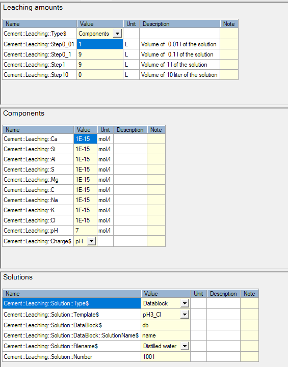

Tutorial - Leaching of OPC
Tutorial TL_OPCPH3 - Leaching of CEM-I - OPC
Description
Calculate the leaching of hydrated Ordinary Portland cement (100 g CEM-I with a water/cement ratio of 0.5 and at a temperature of 25°C) with a HCl solution at pH 3. The CEM I oxide composition is taken from the Lothenbach and Winnefeld (2006) (their table 1). Calculations are done for the Ca-Si-Al-S-Mg-C-Na-K system.
You will learn to
Use the template to calculate leaching of hardened cement paste
Template - Hydrates_30_Leaching_General
Depends on
Tutorial creating a study from a template as illustrated in Calculate cement hydrates assemblage and pore water composition
Step 1 – Create simulation from template for leaching calculation
Go to Project Manager 
Select the project in the bottom panel
Go to Templates tab in the top panel
Select the template “Hydrates_30_Leaching_General” (See Hydrates_30_Leaching_General)
Click the “Create new from template” button 
The Metadata dialogue window opens.
Define the name of the simulation (TL_OPCPH3)
Click OK
The Project Manager is active again.
Select the simulation (TL_OPCPH3) and click Select
Step 2 – Define the problem
Go to the Global Definitions input tab
Go to the Global Variables
The template consists of four tabs:
|
Cement Model |
To define the cement model |
|
Cement Recipe |
To define the cement recipe - in this tutorial, the default settings are used (cement mixture of 100% OPC, 25°C, water-cement ratio of 0.5). No changes are needed here. |
|
Leaching |
To define the leaching steps and the composition of the leaching water components. |
|
Output |
To define the required output. This tutorial follow the default setting, so no changes are required. |
Go to the Cement Model tab (See ModuleCement_Input_01_ModelSystem)
Select system 15 from the drop down menu.
Go to the Leaching tab (See ModuleCement_Input_30_Leaching)

The tab contains three groups:
- The first group ("Leaching Amounts") defines how the leaching solution is defined, and the leached amounts.
- The relevance of the second and third groups depends on the choice on how the leaching solutions are defined via the drop down menu variable Cement::Leaching::Type$.
The amount of leaching solution is defined by the variables in the first group. The template allows for adding water in four different steps size: first in amounts of 0.01 kg (Cement::Leaching::Step0_01), followed by steps of 0.1 (Cement::Leaching::Step0_1), 1 (Cement::Leaching::Step1) and 10 kg (Cement::Leaching::Step10). The user specifies the amount of solution in L for each step - number of steps is calculated by the program. In the default set-up, 100 L of solution is added (1 L in 0.01 kg steps, 9 L in 0.1 kg steps and 90 L in 1 kg steps).
Change value of Cement::Leaching::Step10 to 300 (resulting in a total amount of solution of 400 L)
In this tutorial, the leaching solution is defined in terms of aqueous components that are defined in the Components group. Concentrations of the components (in mol/L) and pH are set. To prevent charge balance errors, one of the components or the pH can be selected to obtain a charge balanced solution (see SOLUTION in the PHREEQC manual).
Set Cement::Leaching::Cl to 1E-3 (Cl will be used as the charge-balancing element. A value as low of 1E-15 mol/L may lead to numerical convergence issues in PHREEQC. 1E-3 mol/L is a better starting condition to ensure numerical convergence).
Set Cement::Leaching::pH to 3
Select Cl from the drop down list of Cement::Leaching::Charge$
Run the problem 
Step 3 – Make a plot of the volume % as a function of L/S (g/g-
Go to the Graph Workspace 
Evolution of aqueous concentrations - in mmol/kgw
The default graph for aqueous molar concentrations is:
In molality (moles/kgw)
as a function of added water (kg)
with linear scales
The graph is converted to:
in mmols/kgw
as a function of L/S (g/g)
with loglinear scales where the minimum y-value is 10-3
Select Elements - M
Unselect automated update of graph 
Right click -> Values Transformation -> X -> L/S [g:g]
Right click -> Values Transformation -> Y -> mmol/l
Right click -> Axis Scale Transformation -> X -> Log10
Right click -> Axis Scale Transformation -> Y -> Log10
Click Edit Graph Tool 
Click Scripting Panel 
Write (gnuplot command - set yrange)
set yrange [1E-3:*]
Go back to graph navigation 
Click Update the plot 

Evolution of volumes of hydrates
The default graph of SolidsVolume can be transformed in the same way adapting Values Transformation for X and Y; Axis scale transformation of X and setting limits on X and Y ranges:

END TL_OPCPH3 - Leaching of CEM-I - OPC